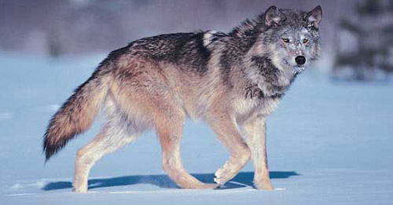
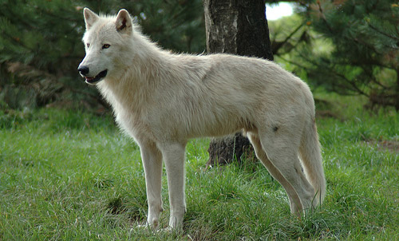
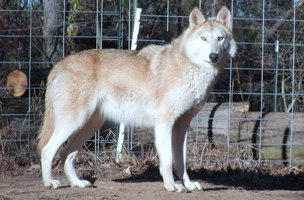
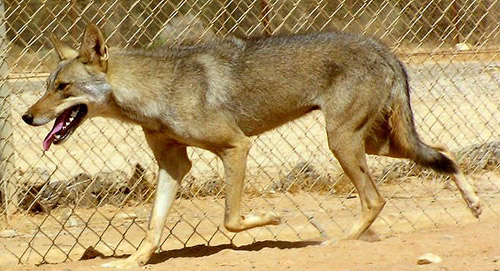
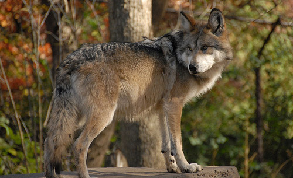
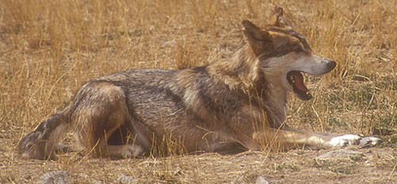
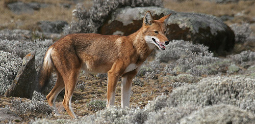

1 / 5

Gray Wolf (Canis lupus)
The wolf from which most others arise, the gray wolf is the largest of the canid species. They can be found in a wide variety of habitats throughout most of North America.
These animals survived the ice age and are thought to be the ancestor of domestic dog. They may not, however, survive mankind.
2 / 5

Arctic Wolf (Canis lupus arctos)
The Arctic Wolf can be found on the islands of the Canadian Arctic and the north coast of Greenland. Because of their extreme isolation and the harsh conditions of their environment, not much is known about this subspecies of gray wolf.
We do know that their coat grows almost pure white and thicker than their cousins to maximize wamth in constant cold.
3 / 5

Tundra Wolf (Canis lupus albus)
Also called Eurasian Arctic wolf, this animal is found throughout northern Europe and Asia, often in the arctic and boreal regions of Russia.
Among the largest of the grey wolves, these animals have a fine coat of fur and are often hunted for it.
4 / 5

Arabian Wolf (canis lupus arabs)
The Arabian wolf was once found throughout the Arabian Peninsula, but now their territory has become scattered to bits of several different countries.
This subspecies is smaller than most and tend to live and hunt in small packs of 2 or 3 animals. They are also one of the few that aren’t known to howl.
5 / 7

Mexican Wolf (Canis lupus baileyi)
The Mexican wolf is one of the most endangered canids on the planet. Originally they were found through most of northern Mexico and parts of the Southern US, and they were declared an endangered species in 1976.
What remains of the breed lives in zoos and wolf sanctuaries.
6 / 7

Russian Wolf (Canis lupus communis)
Found in north-central Russia and one of the 5 subspecies found within the Russian Federation. One of the largest of the grey wolves, the Russian Wolves are champion predators. Because of this, they thrive in the wild and their numbers grow quickly.
These animals are also known to be more aggressive towards humans than other greys. For these two reasons, the Russian wolf is legally hunted to keep their numbers down.
7/ 7

Ethiopian Wolf (Canis simensis)
The Ethiopian wolf is one of the rarest mammals on the planet & can be found only in the tiny Afro-alpine region of the Ethiopian mountains.
These animals were once thought to be jackals and their local name, ky kebero means red jackal. However recent genetic tests show that their bloodlines are more closely related to the big grey of North America. Which of course, makes their existence on the African continent a bit of a mystery.
❮
❯